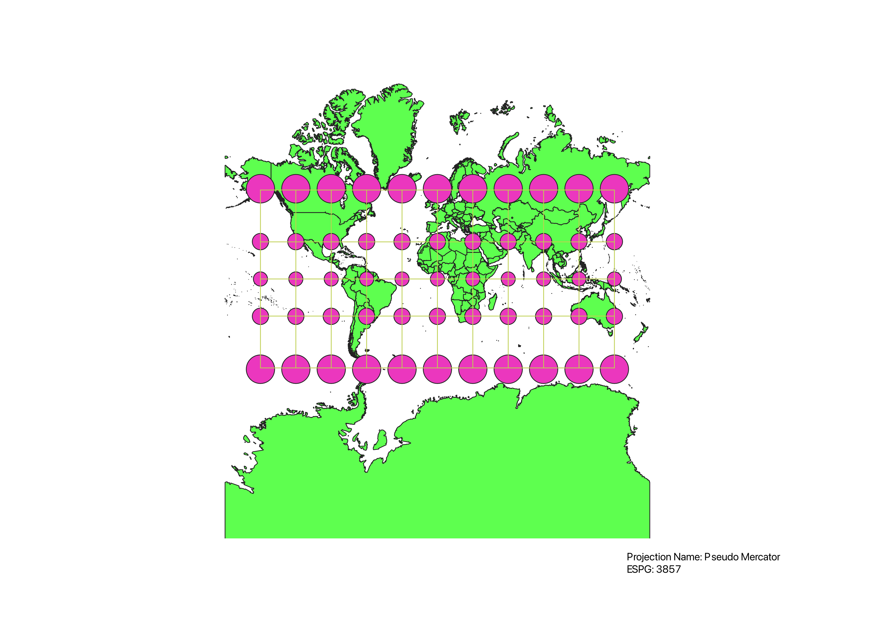
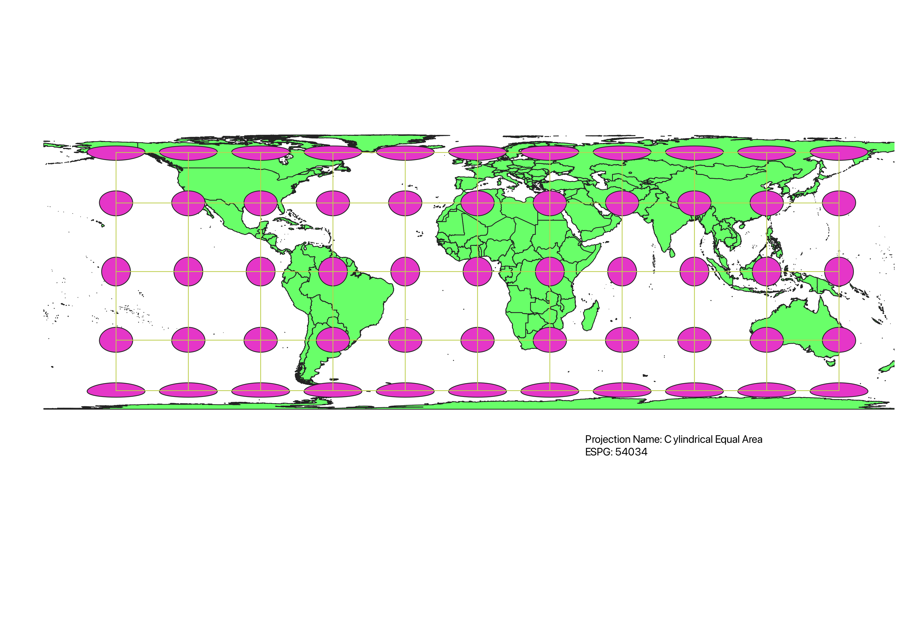
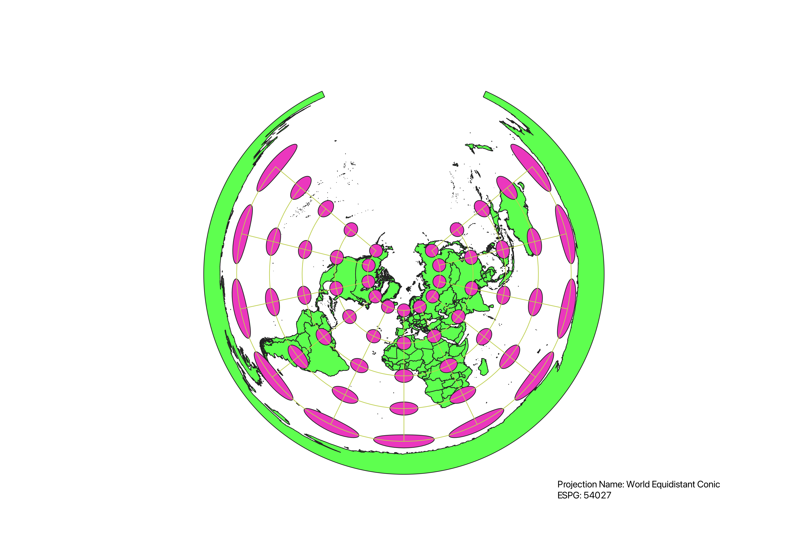
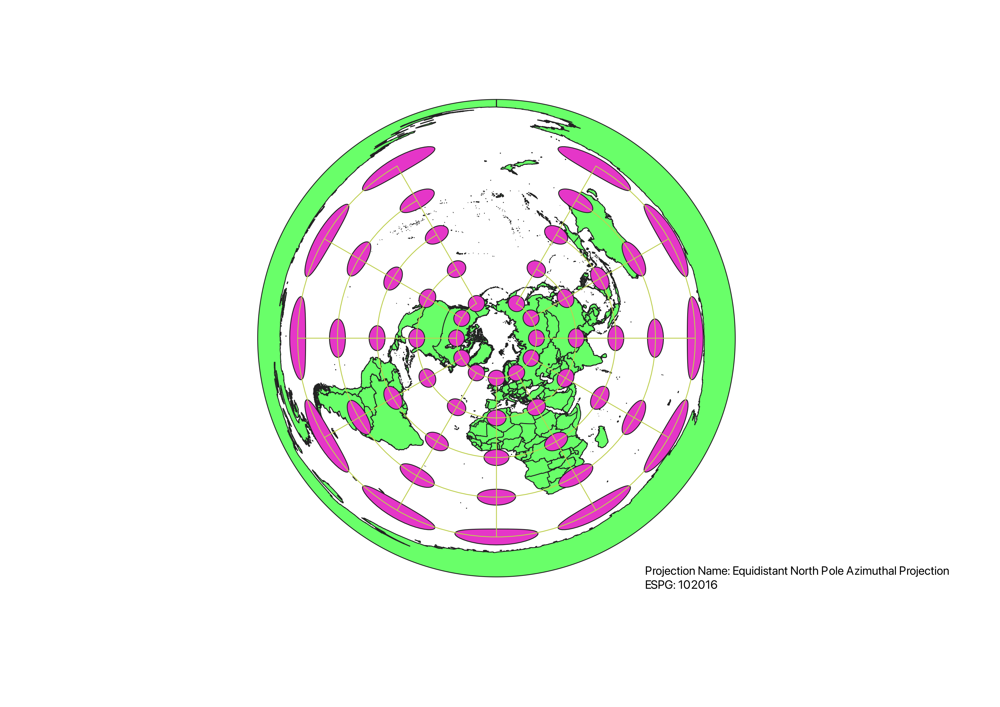
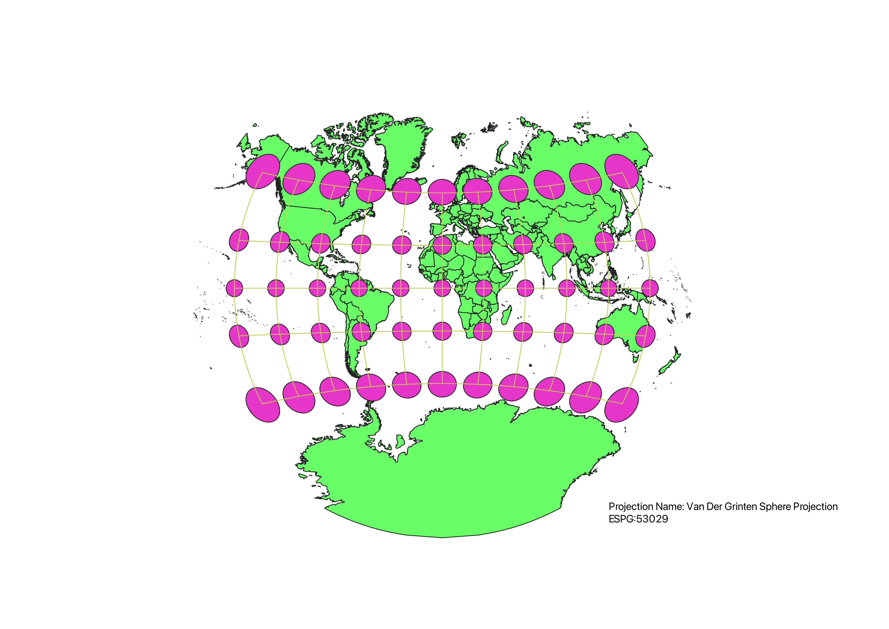
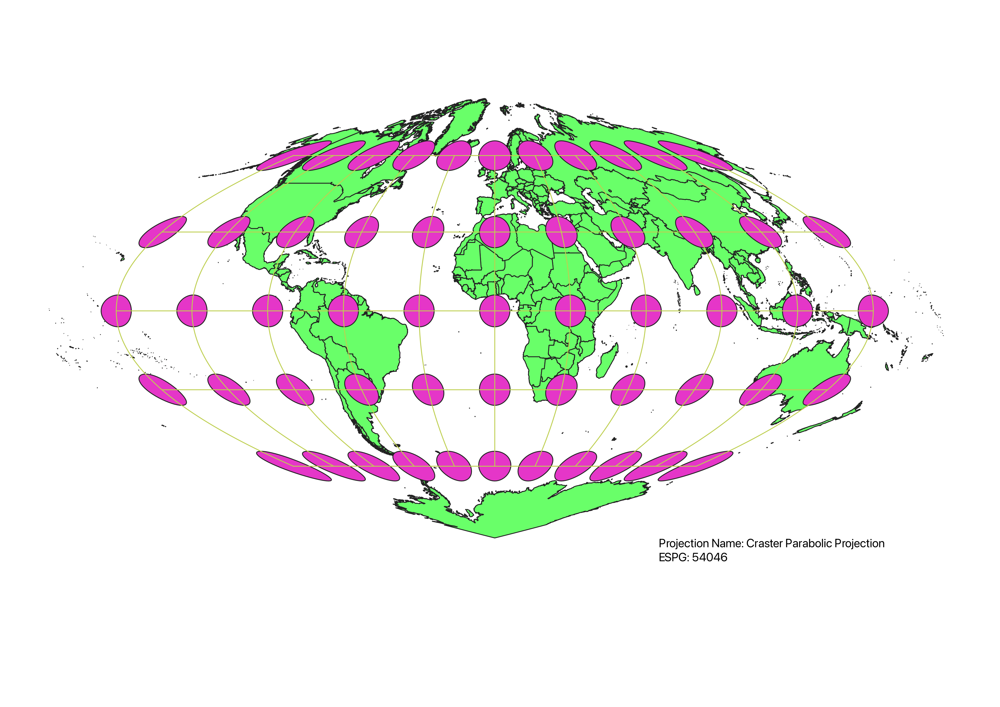

In QGIS, I was able to display the map in different projections using the ESRI button on the bottom right of the screen. This allowed me to search a variety of different projections available. I was also able to type the ESPG of the map into the search bar to easily find the projection. From there, I simply hit apply, and the map was then shown in the chosen projection. In order to display Tissot's Indicatrix, I added the indicatrix plug in to apply to each projection.
The WGS84 Projection of earth is widely adopted as the standard map. It correctly depicts shape of countries but has distortion closer to the poles (land area). This distortion has caused a Eurocentric view of the world and has caused social and political implications. For example, the map shows Greenland as a very large country, when it is actually a lot smaller in land area.
The Aitoff projection is an equal area projection that correctly showcases the area of countries. This is the pro of using this projection. The cons of using this are that the shapes of countries are distorted near the poles due to the 2D model.

The Pseudo Mercator projection is one that preserves the shape of countries, and it is well known. Also, at low latitudes, there is little distortion, making it useful for small scale maps. On the other hand, the projection does not correctly represent the area of countries, with land near the poles being depicted as larger than it really is.
The Winkel projection sufficiently represents the relationship between land, size and area. This is beneficial for certain models, especially at the equator where there is little distortion. However, there is significant distortion at the poles, which incorrectly displays shape and area.

This projection shows the equal area of land masses on a map. This is beneficial when looking at the true sizes of countries. The cons of using this map is that the shapes of countries are greatly distorted and innacurately depicts land near the equators.
The equidistant conic projection is best used for mapping the Northern Hemisphere, as it shows fairly accurate shapes of these areas. It gives a more top down view of the world. The cons of using this projection is that it does not correctly depict the Southern Hemisphere and the south pole, as it distorts the size and shape of this land.
This projection accurately portrays the distance of a land mass to the poles. The cons of this map projection are that it greatly distorts the shapes and land areas of land masses, which means it is not useful for many mapping needs.
The Van Der Grinten projection has an accurate depiction of land near the equator. It also shows fairly accurate area and shape near these areas. The cons of using this projection are that the shapes and land area around the poles are distorted, making this less useful for mapping in these regions.
The Craster projection shows the equal area of land, which is useful for assessing qualities in association with area. This map also shows little distortion of shape near the equator, but has significant distortion at the poles.
